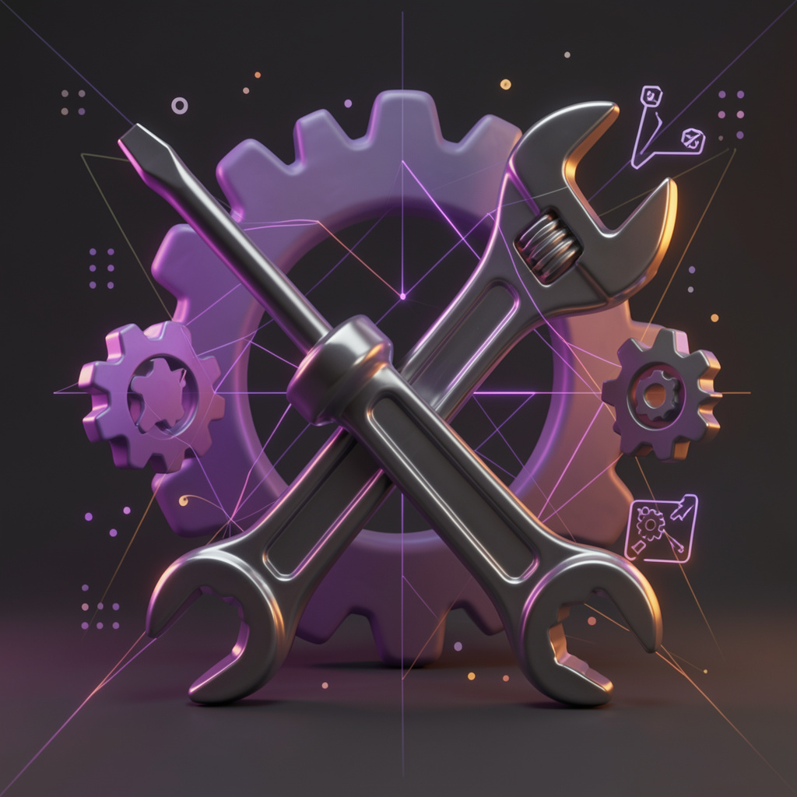

Что делать при сбоях с АМО, админкой или телефонией — порядок действий и цепочка эскалации.

Если что-то не работает (АМО, админка, телефония):
Пишите лично или в рабочий чат: https://t.me/Jane547547
Вместе разбираемся: что могло пойти не так, что уже пробовали. Руководитель проверит со своей стороны.
Руководитель готовит обращение к техническим специалистам:
Вы не пишете техспециалистам сами в личку и не обращаетесь в другие отделы напрямую.
Всё только через группы — вы все в них есть. Первое время — строго через руководителя: он отправляет запрос, следит за ответом, доводит решение до всей команды. Главное — чтобы все видели ответ и знали, как решается проблема.